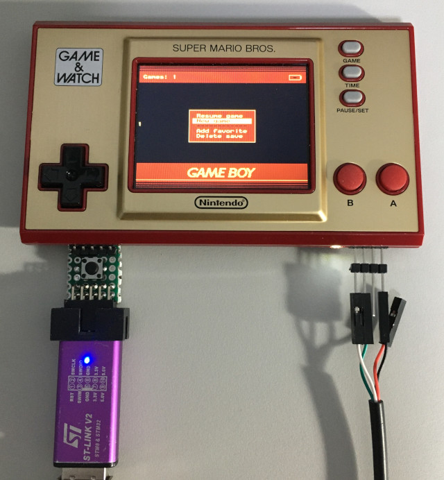
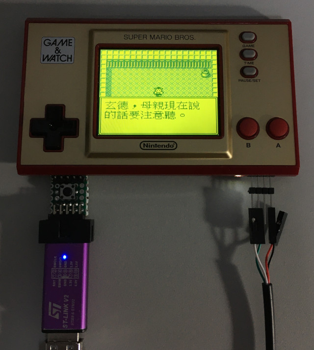

參考資料：
https://github.com/kbeckmann/game-and-watch-retro-go
https://github.com/ghidraninja/game-and-watch-flashloader
https://developer.arm.com/tools-and-software/open-source-software/developer-tools/gnu-toolchain/gnu-rm/downloads
步驟如下：
1. 連接ST-LINK V2
2. 執行如下命令
$ cd $ wget https://developer.arm.com/-/media/Files/downloads/gnu-rm/10-2020q4/gcc-arm-none-eabi-10-2020-q4-major-x86_64-linux.tar.bz2 $ tar xvf gcc-arm-none-eabi-10-2020-q4-major-x86_64-linux.tar.bz2 $ sudo mv gcc-arm-none-eabi-10-2020-q4-major /opt $ export PATH=/opt/gcc-arm-none-eabi-10-2020-q4-major/bin:$PATH $ git clone --recurse-submodules https://github.com/kbeckmann/game-and-watch-retro-go
3. 複製ROM到game-and-watch-retro-go/roms目錄下
4. 編譯、燒錄
$ cd game-and-watch-retro-go $ make -j8 flash
P.S. 記得先編譯game-and-watch-flashloader
完成

